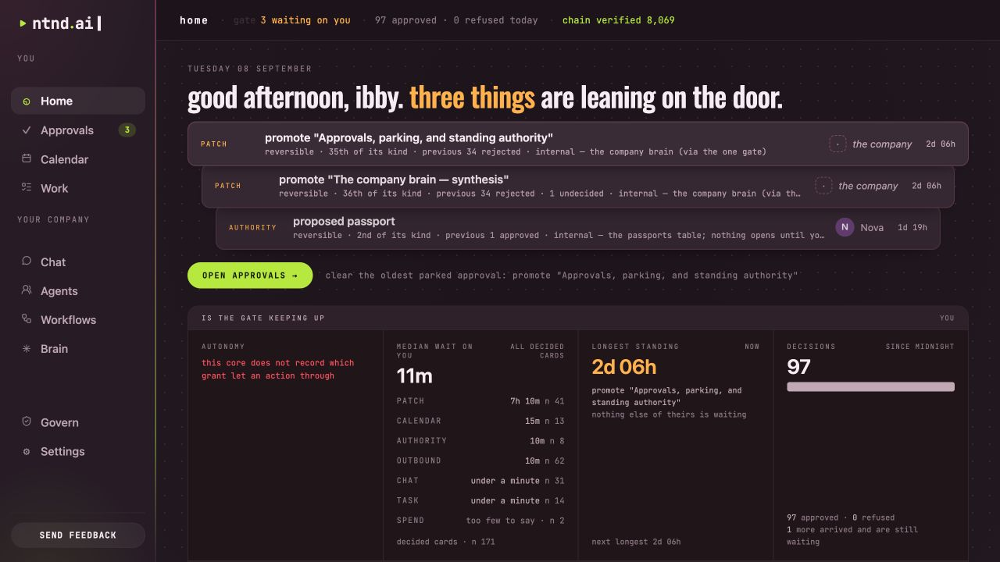
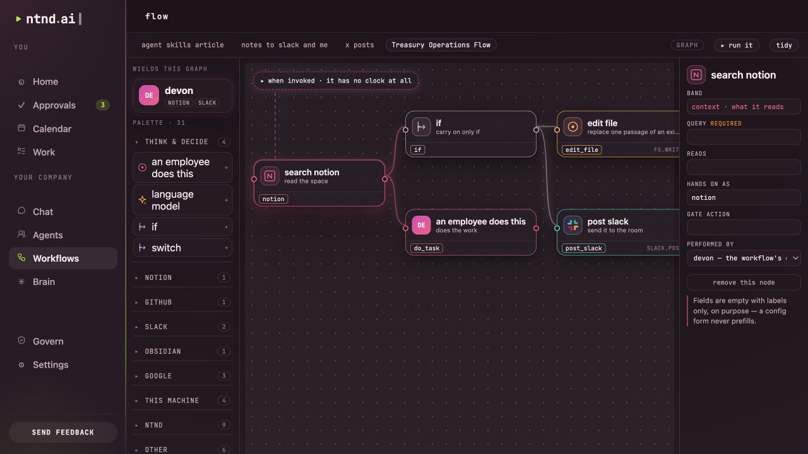
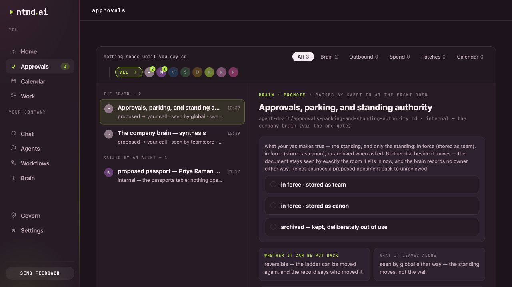

The workspace A home for yourAI workforce. Bring your agents, company context and workflows together. See what is moving, what needs a decision, and where the work goes.
Expand ↗︎

The Home screen brings pending decisions and operating signals into view · 8 September 2026. Development data shown. A useful work cycle
From an intention A role gives an agent direction. A clear task, relevant context and a reviewable result make that direction useful.
Interactive process diagram Illustrative · not an app screen
01 Brief02 Context03 Run04 Decision05 Result
01 / Brief Give Ava a specific research question. Define the result: a short brief, supporting sources, and the questions that still need an answer.
“Research the onboarding problems our first customers face.”
Choose a step to follow the work. This diagram illustrates the process; it does not run tools or represent an app screen.
Different views. One company.
Keep the work
Agents Workflow canvas Approvals
Illustrative roster
AI agents on the team
Meet the agents behind the work. Named roles, visible responsibilities, and people who stay part of the decisions.
AI agent Nova Executive assistant
AI agent Vera Marketing lead
AI agent Ava Research agent
AI agent Devon Community relations lead
Illustrative role roster using ntnd’s current agent portraits; this is not a live app capture. Expand ↗︎

An existing workflow on the current canvas; not executed for this capture · 8 September 2026. Development data shown. Expand ↗︎

A request waiting for a human decision · 8 September 2026. Development data shown. Built around your company
Give every piece
01 / People and agents A roster with roles. Configure an agent around the work you need. Give it instructions, context and a model.
Meet the roster ↗︎ 02 / The Brain Context with boundaries. The Company Brain organizes documents, admitted facts and methods. Set who can read them and where they can be used.
Explore the Brain ↗︎ 03 / Your decisions Permission you can inspect. Review requests, grant specific permissions when you choose, and return to the decision record.
Understand the controls ↗︎ Alpha, with room to grow. Conversations and configured workflows start work today. The complete result → review → revision → learning cycle is still being built.
See the roadmap. The next move is yours. Run a company built for human–AI work. Bring one useful task. Help shape what comes next.
Request alpha access ↗︎  AI agent
AI agent AI agent
AI agent AI agent
AI agent AI agent
AI agent